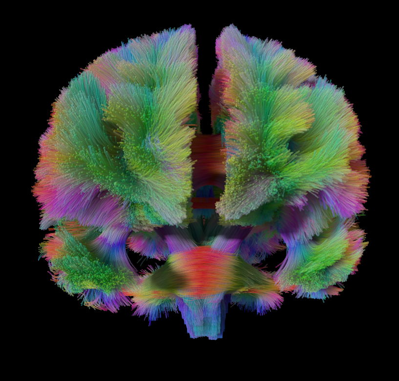
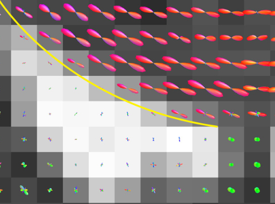
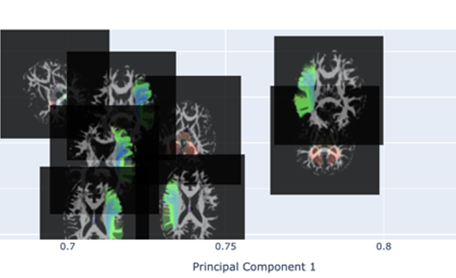
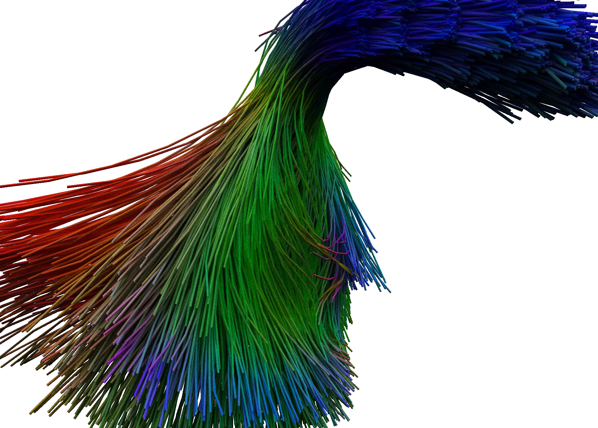
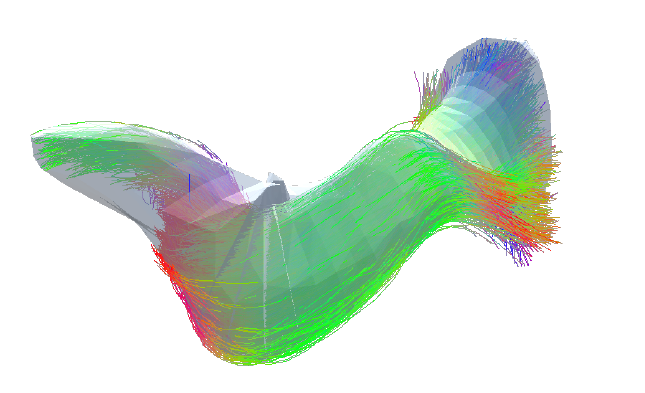

| . VIBRANT: Cinematic Tractography on the web by Bram Kraiijeveld, PhD candidate, Eindhoven University of Technology |
| . Implicit Neural Representation of Multi-shell Constrained Spherical Deconvolution for Continuous Modeling of Diffusion MRI by Tom Hendriks, PhD candidate, Eindhoven University of Technology |
| . DiffReduce: The scope of the tool is to utilise PCA as a dimensionality reduction technique to visualize and analyse dMRI datasets. Made by Teodor Lungu during the graduation project of the Master at Eindhoven University of Technology. |
| . Tract3D is aninteractive visualization for displaying brain white matter tract data using several perspectives, effects and rendering style. It was originally developed over 10 weeks for a visual computing course. Made by A.T.M.C. Riswick, F. van den Boorn and W. Ploegstra. |
 . FiberVisualizer is an intuitive and interactive OpengGL application for visualizing large-scale tractography dataset. It was originally developed over 10 weeks for a visual computing course. Made by Zhang Zichuan and Davey Vermeulen. . FiberVisualizer is an intuitive and interactive OpengGL application for visualizing large-scale tractography dataset. It was originally developed over 10 weeks for a visual computing course. Made by Zhang Zichuan and Davey Vermeulen. |
 . NeuroTrace is a software application capable of reading, interpreting, and visualizing MRI tractography data. It was originally developed over 10 weeks for a visual computing course. Made by Besm Osman and Mestiez Pereira. . NeuroTrace is a software application capable of reading, interpreting, and visualizing MRI tractography data. It was originally developed over 10 weeks for a visual computing course. Made by Besm Osman and Mestiez Pereira. |
| . This repository contains all the code for the tool and evaluations done for research by Cas Sievers during the graduation project of the Master Computer Science and Engineering at the Eindhoven University of Technology. |